| Match Report - 27 June 2009 |
|
|
|
|
|
|
|
| U6 Purple |
North Ryde 1 - Macquarie Dragons B 15

|
|
|
|
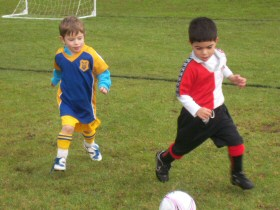
Jasmine this week did a fantastic big kick, right into the head of an opposing team
member. Great tricky kick! Lukah did some really fast running to make saves in front
of the goal.
At half time, Coach Marc said "Everyone was doing a good job with their blocking and
passes."
It was a difficult team to play as they were really fast runners. They may have been
hard to catch, but Jayden, Jasmine,
Lucas, Will,
Lukah and Cameron worked hard
together as a team and enjoyed the game.

Congratulations to the Player of the Week - Jasmine

After the game, some of the team shared what they loved about the game today...
Lukah: "I fooled the other team and then they scored our goal."
Cameron: "Someone getting a goal."
- Sally Last (Supermum)
|
|
|
| U6 Red C |
|
North Ryde Red C - All Saints H/Hill A
|
|
|
|
Fletcher played really well. We scored some goals - five I think. We did good passing.
- Martin Sellar (Player, aged 6)
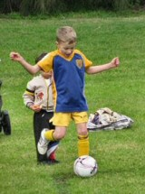
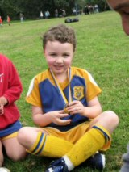

|
|
|
|
|
|
A very close contest this week, with Putney only just getting there nose in front with
a goal in the last 60 seconds. Arlen and Aden played their usual strong game up front,
with Alex W and Alex G again driving ball's forward from the mid field. Alex C played
a lot more defence this week as Troy, our stable defender, decided to take on a
sweeping role and pushed a lot further forward.
Week after week the team's ball skills are developing, and we're seeing a lot more
passing and movement into free space. Another highlight of the guys development has
been the amount of talking they're doing, be it encouragement of their team mates,
or calling for the ball.
This weeks 'Best Ball Skills' certificate went to Arlen, the 'Best Team Player'
certificate was taken by Alex C. Our best all rounder trophy went to Troy.
- Rob Wylie (Coach)
|
|
|
| U7 White |
|
North Ryde 7 - Ryde Saints United A 2
|
|
|
|
Last week the Knights were running low on players but never the less running hot on
play. Starting the deluge was young Hugh Collin with a decisive goal setting a flood
from Rafael, Ben, Henry, William. Which basically means everyone scored.
Highlights were young David Ben Beckham's defense, David Rafael Beckham's striking
and an all round immaculate effort of tackling, driving the ball forward, and holding
position by the entire David North Ryde Beckham squad.
Final score 7 to 2.
Well done to other squad for never giving up and good sportsman ship all round.
Here's to an equally good game this week effort wise and with a fuller squad who
knows what will happen.
Good luck North Ryde!
- Nigel Collin
|
|
|
| U7 Yellow |
|
North Ryde 4 - Ryde Saints United B 0
|
|
|
|
Another cracker of a game, the boys certainly showing confidence slotting 4 goals in
to the net and showing great signs in defence with no goals conceded.
First half started off a little slow but when Jarrod opened up the goal count with
some more really good running with the ball put the boys on the front foot. Good work
from all round team work with a happy Blake opening up his goal account with a great
bustling run up the middle to finish with the ball in the back of the net.
You can see from the side line the boys really understand the attack and defence set
up of a game with the boys falling back behind the ball when losing possession which
makes it hard on the attacking sides to penetrate the goal and how that defence turns
quickly into attack.
As the boys gain more game fitness the confidence grows with Alex gaining more touches
of the ball and the Luke boys attacking the ball putting pressure back on the opposition,
also big hit ups from hard man Jay and Kaiden gaining field position with the long kicks
up field.
A really great effort from all the lads, with Luke A taking the man of the match due
to his defence and skill on the ball.
Well done!
- David Anderson (Coach)
|
|
|
|
|
|
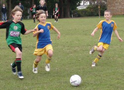
Holy Cross College, cut grass, dry grounds, no rain - things were looking up! And
with the improved conditions came an improved start to the Div 1's match against
their fellow rivals from Glenhaven.
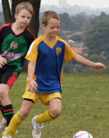
They launched into attack with vigour from the word go, and strung together a sequence
of passes that we hadn't seen for a while. Adam to Jett, Jett to David, David up the
line and a lofty cross to the ubiquitous Eli, who intercepted the pass and sunk it
into the back of the nets.
A few moments later and another terrific series of quick and precise passes saw David
with the ball at his feet with just the one defender to beat, who, once done, powered
the ball with his right boot into the top-left of the Glenhaven nets with some amount
of disdain.
With the team in this kind of dominating form in the initial passages of play it
seemed we were going to be in for a cracker of a match. But the flurry of efficiency
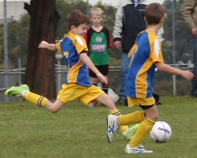
and teamwork seemed to subside as quickly as it had begun, and the discipline was
replaced by a certain degree of complacency and a rather haphazard execution of the
intended game plan.
The play became a bit sluggish, and was not helped by the magnetic qualities of the
far sideline, which, for a space of about five minutes, seemed to draw the ball back
over the line a split-second after it had been thrown in
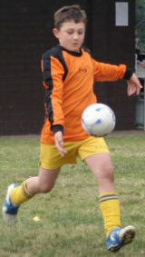
Glenhaven, for their part, and possibly encouraged by the hole or two that was
appearing in the North Ryde game, made just two breaks to goal in the entire first
half but were able to convert their opportunities on both occasions, rather soft goals
at that, and bring the scores level to two apiece at the break.
The second half carried on where the first had left off, and the ball kept flying
from one half to the other in tennis-like fashion as only a linesman, I now realise,
can appreciate

Shannon was working hard to ferret the ball from the opposition and make something
happen, and Tom Maclean was very quick to shut down any advances made by the Glenhaven
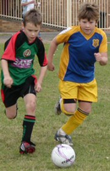
forwards. There was a mild skirmish in the Glenhaven goal mouth which, but for the
vast quantity of bodies between the ball and the goal line, would have given North
Ryde the winning goal they were so desperately seeking. In this pinball frenzy,
Anthony managed to get a foot on the ball which all but went in, hitting the left post
before the keeper threw his body on the ball and effectively extinguished the flame.
Harrison kept goal in the second half and his heavy right boot ensured the ball would
land in the other half with each clearance kick. Jack and Patrick played their usual
and reliable game in the fashion of: clean tackle, steal ball, turn around, change
the course of play. Jett had an awesome game, using his strength and speed to rip the
ball off the opposition and blast it pretty much wherever he wanted it to go. Charlie,
David, Adam, Eli and Shannon worked the midfield with determination and great foot
skills to move the ball within striking distance and try and clench that elusive
winning goal. The brave young Div 1's kept plugging away, and some of the magic that
we saw at the start of the match returned to their feet in the dying moments of the
game.
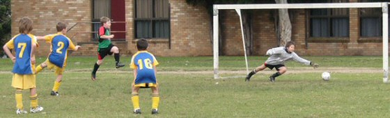
With a little over one minute of play to go, Tom Maclean ran with the ball at
scintillating pace down the right wing and put a handy cross in that clattered into
the defenders and earned North Ryde a corner kick. The corner play was powerful, and
was only halted by the hand of an unfortunate defender inside the Glenhaven box.
Cometh the hour, cometh the man. With the seconds ticking away, Tom blasted the
penalty kick past the keeper's outstretched hand into the bottom-right corner of
the Glenhaven nets to gift North Ryde a 3 - 2 win. Well done Tom
Not the prettiest game by any stretch, and certainly well behind the potential of
this young Div 1 team, but a building block all the same with a few do's and don'ts
for the skills they will inevitably employ as move forward.
- Mark Howard (A linesman's point of view)
|
|
|
|
|
|
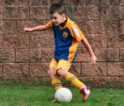
With a blue sky and the sun shining it was a perfect day for a game of soccer!
Holy Cross started strongly but our defensive pairing of Peter
and Andrhea performed really well.
Oscar tried really hard to score a goal for the team.
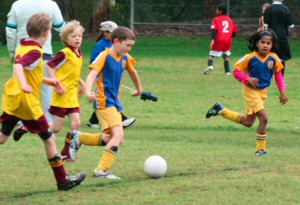
However, we did not have any luck. Matthew also produced
some big kicks to get the ball out of the danger area. At half time we were down
3 - 0.
Thomas S made many saves with his wonderful slides.
Rhea also had a good chance to score. Besides that, we
could not play without little Andrhea and her terrific
defence against the big players. Well done Andrhea, you deserved your Player of
the Week award.
Amazingly, Peter tricked a couple of players with his
quick feet and some good passing to his team mates. This is what Team Sport is all
about.
Our goalies, Hamish and Liam,
had their work cut out with all the opposition attacks. Surprisingly,
Ryan played with some aggressive moves to prevent any
further damage to the scoreline.
Satya and Ryan looked for free
space and attempted to control the game. Our new team member,
Anaya, also contributed with her kicking game. Well done
Anaya
The final score was 5 - 0 to Holy Cross. The team all enjoyed the game and never gave
up. Hey Hey Hey!
- Mandy Van (Team Manager)
|
|
|
|
|
|
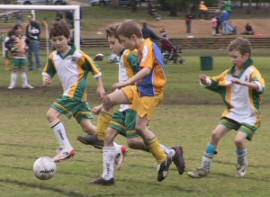
We were a bit slow to start. The field was still a bit muddy. Chris as goalie
saved many certain goals in the first half. Our coach (my Dad) said we were doing
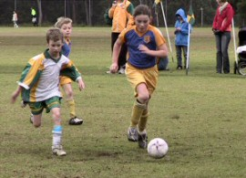
too much watching in the first half and not getting in to have a red hot go.
They had no reserves and we had 2 so we shouldn't have not got as tired as them. We
tried really hard in the second half but they got a couple of lucky goals.
Everybody had a good time. Better luck next week - thank you to everyone who came
to watch us play, it was a long way from North Ryde.
- Ben Curdie (Player)
|
|
|
|
|
|
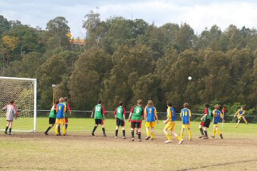
Wow! What a wonderful complete game of soccer the team played to earn their first
win of the season.
The win was even more deserved as it was accomplished with only 11 players and no
subs. Great attack and rock solid defence had the Glenhaven team on the backfoot
right from the opening whistle.
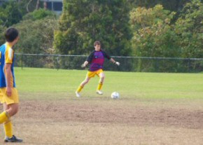
No early goals today with our new attitude, commitment and defensive line up with
Regan C at sweeper, Matthew U at stopper, Victor T at right back and William G at
left back tackling and challenging strongly for every ball.
Regan C at sweeper once again performed his role superbly and has fitted into this
position extremely well. William G has relished his opportunities out of goal and
seemed to pop up all over the field wherever needed using his pace and size to great
advantage as at least 1 Glenhaven player who was on the receiving end of a good
solid tackle will testify.
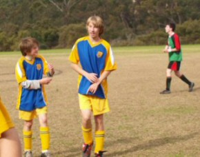
Matthew U fitted in to the role of stopper and was rock solid and continues to grow
in confidence each week, he was ably supported by Victor T who had one of his
strongest games so far. The efforts of the backs was rounded off by a solid
goalkeeping display by Tyler R who read the game well and attacked the ball when
appropriate, well done Tyler.
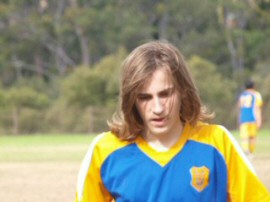
Glenhaven did however score the first goal against the run of play a long range shot
following a clearing goal kick, but that was it as far as the scorer was concerned
for Glenhaven.
The team responded courageously to this setback and set about putting things right
with a great come-from-behind win.
Liam T, Jordan C and Sam B controlled the midfield and continually worried the
Glenhaven defence whenever they had the ball at their feet as well as challenging
strongly and more often than not winning possession from Glenhaven Stephen B-H has
responded well to his shift to left half and his increased involvement in the game
in this position saw him score a double in this game. Liam T rather fittingly for
his strong efforts was also rewarded with a well taken goal.
Tim B and Lewis B as strikers continually worried the Glenhaven defence and Lewis B
and despite not scoring themselves contributed in the build up to the goals scored.
Well done to everyone you should be as proud of yourselves as are your coach, manager,
parents and club President Mark Simpson. Keep up the great work at training and on
the field and more wins will come your way for sure.
- Bill Greer (Manager)
|
|
|
|
|
|
The sun was finally shining but the ground resembled something that had been left
over after a good old mud wrestle! The boys were depleted today from their injury
prone week before but still managed to muster up a few reserves on the bench. Nth
didn't start well though as they lost the toss. Would this be an omen for things to
come? The stoush against WPH is always an interesting one but the boys seemed friendly
enough before the game. Pommie ran on with his boxing gloves but the ref asked him to
remove them.
The passing in the first five minutes from Nth Ryde was well controlled. WPH finally
got a touch on the ball 5 minutes in and sent a high ball through to Higgo; he was
put under pressure by the WPH striker steaming through on him. Mark H supported Higgo
well and the pair diffused the situation well. Mark H then sent the ball onto Firgs;
the passing was spectacular as it went from Nth Ryde player to Nth Ryde player in a
well controlled display of football. After the movement through 7 sets of feet Dutchie
had the final say with a shot on goal that unfortunately went wide. Nth seemed to be
playing well especially in the left wing, Macca was ably assisting in defence.
Dutchie received our first yellow card of many for the afternoon as he cheekily walked
past a WPH player taking a free kick. The ball hit the back of his legs and Dutchie
innocently tried to argue his way out of the yellow with a 'what did I do ref' comment!
From the ensuing free kick to WPH they had control of the play & through some poor Nth
Ryde defence had a shot on goal. As always Agro was in the right position and shut the
attack down quickly. Nth then had some clever play with Firgs up the sideline which saw
the WPH players arguing with the ref that the ball had gone out. The Nth Ryde players
continued to play to the whistle and cleverly Firgs kicked the ball to deflect off a
WPH player to the sideline. This gave Nth an advantage of about 15 metres all because
they played to the whistle! Nth gained the advantage and it lead to a half attempt on
goal by Dutchie. (You'll see his name pop up quite a bit in this report today as he
seemed to be everywhere). Nth then received a free kick and Dutchie stepped up to take
it. He hit the ball into the box and Macca was waiting. He hit an awesome header and
the keeper just got to it to pull off a great save. Nth were having their chances but
just not able to convert. Ando then received a free kick and he wasn't too far it. It
was a great opportunity to score. Now I know Ando is something like 10 foot tall (at
least to me he seems that tall!), but Ando, really, did you need to hit the ball that
hard and high that it found its way into the top of the tallest gum trees in the
district? The goalie only stood knee high to a grasshopper! Nth then had some more
of the play and continued to offer shots to the WPH very tall keeper! Nth were finding
the open spaces well and applying some great pressure to WPH but just couldn't convert
their chances.
Subs were called for as the boys were getting tired. The subbing seemed to rattle Nth
a little and they found themselves under some pressure from WPH. Agro again pulled off
two great saves to keep Nth at 0-0. It would have been a shame to have a goal conceded
at this point as Nth definitely had the run of play.WPH continued to apply some pressure
and had two corners in succession. Agro was taken off the ball by a WPH striker and let
the ref know his thoughts on the matter! Nth were back on the offensive & Higgo put a
great ball through to Pommie who had an excellent opportunity to score the first goal
for Nth, somehow he managed to fire the ball right at the keeper. Matt S then had a
little stoush with his opposing number but neither player received a card for their
efforts. The half ended at 0-0 but Nth should have been at least one or two goals up.
Composure and patience was called for by Darren at half time.
The second half started like this:
Kick off, ball to Dutchie, Dutchie passed to Steve and Steve laid a great ball back
to Dutchie who found himself in open territory one-on-one with the keeper. He beat the
keeper and sent the first goal into the net! What a goal and it came from some clever
passing which Nth had continued to do all day, the reward had finally come.
Now the events turn weirder. Nth Ryde received a penalty from some pushing by WPH in
the box. It was a big call and Dutchie again stepped up to the mark. Now usually Dutchie
would chew up opportunities like this but Ando had got in his ear about how to kick and
as Dutchie moved in to strike the ball he got too much of it and the ball hit the cross
bar. He could have been a complete hero within 10 minutes of the half starting but
missed his opportunity. The ball rebounded into the field of play and Nth had lost
their advantage momentarily. Macca then received a free kick for a push in the back,
it didn't amount to much and the play continued. Matt S then began his chatter again
with his opposing number and received a yellow card for it. It was a shame as Nth was
on the offensive at the time. Steve P was having an excellent game up front until an
injury saw him sidelined for the day. Add that one to the growing injury list and next
week could see Nth in trouble. Brownie then had a run with the ball and somehow that
sniper popped up again to bring him down like a sack of potatoes. Did Ado have something
to do with it? I wonder...! In the blink of an eye the play turned nasty and a WPH player
decided to have a go at Macca. Macca, not one to ever back down in a situation had his
say back to his opposing number. The ref then saw something from Macca that he didn't
like - let's just say that knees and groins don't always go together, and Macca received
a red card for his efforts.
Now sitting on the sideline one would have thought that both players would have been
sent off, as it was a 50/50 stoush but the ref decided that the WPH player 'was so close
to a red' but only received a yellow. Now we were down to 10 men and with a lead of only
1-0, had the spectators worried about the outcome. Well, it didn't seem to bother Nth at
all as they lifted and even played better than what they had been. They had more
opportunities to score but couldn't convert. Brownie then received a yellow card for a
bad tackle which he told me after the game was 'perfectly legal'. Brownie, it was one of
the worse tackles I have seen in a long time and your studs were up! Nth then had a few
corners that they just couldn't convert off and some more WPH chatter saw Col very upset.
He retaliated with some verbal banter and received a yellow card for his efforts. Darren
was quick to sub him as he seemed to be rattled by the moment. Pierre then came into the
running for the goal of the season. He hit a ball from about 20 metres out; he had two
other attacking options but decided to go himself. Now, we know the keeper was not the
tallest (hey Ando) so Pierre decided to back himself and go for goal. He hit it and over
the keepers head it went and into the back of the net. The sideline went crazy as it was
just desserts for having the WPH players gesture the sideline when Macca was sent off.
2-0 Nth Ryde, Nth then had to defend but did it well. They were a man down but didn't
play that way. Dutchie had a blinder and was well backed up by all of his team. With
minutes to go, Darren began the substitutes. Karim only saw about 10 seconds of play in
the second half until the full time whistle was blown. What a great team effort with some
brilliant individual opportunities, 2-0 Nth Ryde.
- Lhan Gannon (Reporter)
|